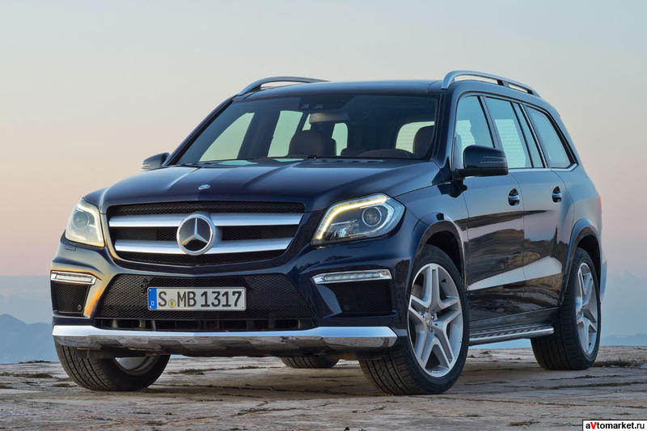
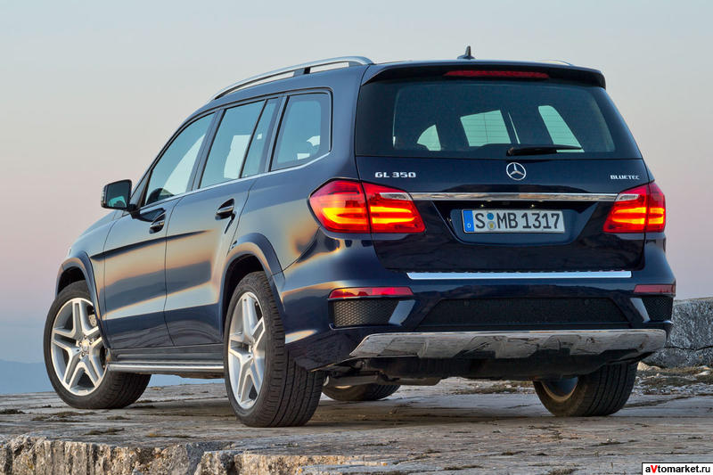

|
|
Основные данные
Начало производства:
январь 2012
Окончание производства:
в производстве
Кузов:
5 дв. внедорожник (X166)
Двигатель
Тип двигателя:
V8
Марка топлива:
бензин
Объем двигателя, куб. см.:
5461
Мощность, л.с.:
558
Достигается при об. в мин.:
5250
Крутящий момент, Нм/об. в мин.:
760/2000
Максимальная скорость, км/ч:
250
Время разгона до 100 км/ч, сек.:
4.9
Расход топлива (смешанный цикл), л. на 100 км.:
12.3
Расход топлива (в городе), л. на 100 км.:
15.8
Расход топлива (за городом), л. на 100 км.:
10.3
Диaметр цилиндра, мм:
98
Ход поршня, мм:
90.5
Выхлоп CO2, г/км:
288
Коэффициент сжатия:
10.5
Коробка передач:
АКПП
Количество ступеней:
7
Габариты
Длина, мм:
5120
Ширина, мм:
1934
Высота, мм:
1850
Колесная база, мм:
3075
Колея колес спереди, мм:
1655
Колея колес сзади, мм:
1675
Прочее
Размер шин:
295/40R21
Снаряженная масса, кг:
2480
Допустимая масса, кг:
3250
Объем багажника, л:
680
Объем топливного бака, л:
100
Диаметр разворота, м:
12.4
Гарантия от коррозии, лет:
2
|

 |